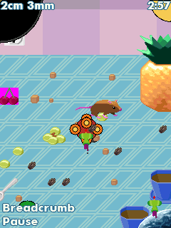

We brought Katamari a clean BioShock execution core, Contra’s timer and bitmap work, and Genesis’s visual layout. The little Prince still had some requests of his own.KT01
Release really means release.
In other bridges, we’d kept a short press alive until a normal update could see it. Katamari counted releases for its triple-tap charge. Each release had to stay immediate and distinct. We could borrow the queue’s ordering, but copying the whole release policy would get this game wrong.KT04KT05
The King’s tutorial supplied another easily misread interaction. The first UP dismissed the instruction and cleared the held state. Letting go and pressing again started rolling. Likewise, modal routing chose the event’s role before delivering it, so one down edge would not both open and accept a dialog.KT02KT03
469 callbacks, then a graphics call.
The 0.1.0 phone run reached the timed stage before stopping at an unsupported IGraphics method. It was not the whole renderer failing. The countdown wanted a clipped quarter-circle and the sector showing elapsed time.KT10KT11
The repair implemented the measured center, radius, start angle and sweep operation, including clipping and outline/fill behavior. A retained profile used only as a host fixture reproduced the old fault and let the repaired runtime continue through another thousand timed callbacks. The Android app did not receive that unlocked fixture as a replacement save.KT11KT12

The original timed Make a Star 1 scene after the circular-countdown service was implemented. Retained desktop ARM runtime frame; not the phone session that exposed the fault.
Open the image for the full original view.
KT90Another piece travels.
Reporting borrowed a different bridge’s work: the notes explicitly follow RE4 Zeebo 0.1.9’s cached metadata and independent writer. A report could finish while the original session lock was held, without running another guest instruction to obtain it.KT13KT14
Later original-engine checks confirmed simultaneous roll, turn and shuffle inputs. In Scheme 1, continued rolling after UP release belonged to the original game’s latch; it was not a stuck touch to clear by force.KT15
The last repair in this window was right on the controls: thirty clipped SHUFFLE labels across the tested layouts. We changed the label to SLIDE while keeping its original inputs and target sizes. Sometimes the next fix really was just making the word fit.KT16KT17KT18
About these records
Historical phone evidence exposes the timed-level fault. The repaired countdown and simultaneous-input checks are original-engine host tests with an archived profile used only as a fixture. The displayed frame is retained desktop output. Modal routing is a documented prevention mechanism, not an invented phone failure. The label repair and framework report exporter retain their separate test scopes; later phone feel is not inferred from them.
The receipts
Selected report lines, investigation notes and recorded feedback. Each receipt keeps its original source and scope.
KT01 / The clean BREW family reaches KatamariCheckpoint investigation notes
Source: 18-Katamari_Bridge_v0.1.0_PRIVATE_CHECKPOINT.zip / Katamari_Bridge_v0.1.0_PRIVATE/TECHNICAL_HANDOFF.txt · selected lines 3–19
The original 137168-byte 2008 ARMv5/Thumb module runs in the Java BREW compatibility layer. The core comes from the clean BioShock v0.2.0 lineage, including Contra's native timer deadlines and exact bitmap memory watches; the UI follows Resident Evil Genesis. It does not reuse the old hot BioShock v0.1.7 build. No gameplay is reconstructed and no game instructions are patched. TITLE INTEGRATION Class ID 0x0106CC3B, native framebuffer 240x320. Selected module/resource.bar are byte-identical across the unnumbered and screen-capture variants. Clean MIF/icon comes from the latter. All three exact original ZIPs are retained; the other 2009 variant has different native maps and archived player progress. Existing runtime gzip sources, original BMP decode/palettes and native file services cover this resource.bar. Katamari adds the display/font measurement services, original SoundPlayer memory-source handling, the optional original 0x01005000 query, and graphics circle/ellipse rendering. Circle/ellipse outlines honor no-fill mode; border thresholds are calculated once per draw.
KT04 / Three queued taps keep three separate releasesHistorical host controller regression
Source: 18-Katamari_Bridge_v0.1.0_PRIVATE_CHECKPOINT.zip / Katamari_Bridge_v0.1.0_PRIVATE/evidence/controller/input-regression.log · selected lines 1–4
PASS: 43 actual production Katamari controller checks. Original native evidence: triple queued taps = 3 separate key presses + 3 immediate key releases; all handlers execute original ARM instructions; input pumps 0 native timers; one due worker runs exactly 1 original registered timer. Covered: original startup pause/resume; distinct queued taps and immediate physical release; duplicate/held key behavior; one due worker; no early timer or input-driven timer; pause hold-release and tick cancellation; paused input suppression. Scope: host queue/clocks are deterministic fixtures; Android media consumption and filesystem writes are not tested; this does not prove physical phone heat, sound, or touch feel. No guest module, guest memory, callback code, or game state is patched.
KT05 / Original control schemes and triple-tap chargeCheckpoint investigation notes
Source: 18-Katamari_Bridge_v0.1.0_PRIVATE_CHECKPOINT.zip / Katamari_Bridge_v0.1.0_PRIVATE/evidence/native-analysis/NATIVE_FINDINGS.txt · selected lines 17–23
CONTROL HIERARCHY (original BAR controls.txt + native tutorial): Scheme1: Up/2 starts rolling;Down/8 stops, then reverses;Left/4 turns left; Right/6 turns right;OK/5 jumps180 degrees;1 shuffles left;3 shuffles right. Triple Up taps charge roll. Scheme2: cardinal movement;any move tapped3x charges;OK/5 and1/3 retain the same functions. No bespoke diagonal buttons are supported by these help texts.0 toggles vibration;9 cycles audio. Native executable overrides one obsolete tutorial[#] vibration hint to[0].
KT02 / One down edge must not accept the dialog it just openedCheckpoint investigation notes
Source: 18-Katamari_Bridge_v0.1.0_PRIVATE_CHECKPOINT.zip / Katamari_Bridge_v0.1.0_PRIVATE/TECHNICAL_HANDOFF.txt · selected lines 21–28
INPUT PROTOCOL Original modal dialogs consume EVT_KEY (0x100); ordinary scenes consume EVT_KEY_PRESS (0x101), then EVT_KEY_RELEASE (0x102). The runtime snapshots the original modal flag before a down edge and sends exactly one appropriate event. This prevents one down edge from both opening and accepting a new dialog. The original release handler counts triple-tap charges, so releases are immediate and never coalesced. All guest actions still run on one worker. The host adds no input-triggered timer slices or synthetic diagonal buttons.
KT03 / The first UP dismisses the instructionCheckpoint investigation notes
Source: 18-Katamari_Bridge_v0.1.0_PRIVATE_CHECKPOINT.zip / Katamari_Bridge_v0.1.0_PRIVATE/evidence/native-analysis/NATIVE_FINDINGS.txt · selected lines 48–55
NATIVE TUTORIAL MOVEMENT GATE: The first Up press consumes the King's "start rolling" instruction. Native text advance 0x0010D428 clears held input (game + 0x2E3C) at 0x0010D52C, and clears the instruction/pause gates at 0x0010D514/0x0010D518. Release Up, then press and hold Up again to roll. Original physics 0x0010CA20 updates position at game + 0x2CFC (x) and + 0x2D00 (y). Acceptance confirmed that the second hold changes both guest position and rendered pixels. This is original tutorial behavior and does not require a runtime patch.
KT10 / The phone reaches the timed countdown and faultsOriginal phone runtime report
Source: Katamari_Bridge_v0.1.4_PRIVATE_CHECKPOINT.zip / Katamari_Bridge_v0.1.4_PRIVATE/evidence/phone-v010/Katamari-Bridge-v0.1.0-report-20261015-220143.txt · selected lines 8–17
Host failure: none Save error: none Module loaded: true; applet created: true; start accepted: true Original ARM steps: 58165290; timer callbacks: 469; key events: 34 Display updates: 465; blits: 20269; framebuffer: 240x320 Images: 25; images decoded: 0; decode failures: 0; unknown interfaces: 1 CPU error: null; live error: timer -> RuntimeException: Unsupported BREW interface cls=01002001 off=0x64 r0=0100E588 r1=03EFFF64 r2=F0001064 r3=00000054 lr=0x00108460 Original audio play/stop requests: 4/15 Android audio starts/stops/errors: 4/2/0; Track completed 0; muted=false Timer policy: original SetTimer registration deadlines; only due callbacks execute; one queued worker tick; no input-driven timer pumping
KT11 / The countdown needed a clipped circular sectorCheckpoint investigation notes
Source: Katamari_Bridge_v0.1.4_PRIVATE_CHECKPOINT.zip / Katamari_Bridge_v0.1.4_PRIVATE/TECHNICAL_HANDOFF.txt · selected lines 162–178
UPDATE FROM THE PHONE REPORT (v0.1.1) The owner's SM-S938U / Android 17 report reached 469 original callbacks before IGraphics cls 0x01002001 method 0x64 failed at native LR 0x108460. Android audio had 4 starts and 0 errors, battery 29.0 C, thermal status 0 during the short run. Those measurements establish this run only; no extrapolation to long play. The native caller supplies five signed shorts: center(x,y),radius,startAngle, sweepAngle. The countdown draws a clipped quarter-circle at(screenWidth,0), radius 30,start 270,sweep -90, then overlays the elapsed-time sector. The new backend supports signed/wrapping/full/zero sweeps, fill/outline and clipping; it writes through the existing DIB coherence path. No game instructions patched. Per-draw trigonometry sets the two rays; the pixel loop uses cross-products. Regression uses the supplied archived config from the other original ZIP only as a host fixture to unlock Make a Star 1. It reproduces exactly the same error with v0.1.0; the new runtime executes the native sector and 1000 further timed callbacks. This fixture is never preloaded by the Android app.
KT12 / A thousand further timed-level callbacksHistorical host original-engine regression
Source: Katamari_Bridge_v0.1.4_PRIVATE_CHECKPOINT.zip / Katamari_Bridge_v0.1.4_PRIVATE/evidence/timed-level-regression.log · selected lines 1–10
PASS timed stage reaches original gameplay beyond previous drawing fault Native timed-stage position 503040,104704 -> 503040,67584 PASS Katamari really moves in Make a Star 1 PASS original countdown invokes implemented sector operation (494 draws) PASS original turn, shuffle and U-turn handlers remain live in timed level PASS native timed-level pause/resume returns to game PASS 1000 actual timed-level callbacks pass beyond previous fault PASS no missing BREW interfaces on tested timed-level path PASS countdown keeps rendering through endurance PASS 8 timed-level checks
KT90 / Historical image / Katamari in the original timed level after the countdown repairHistorical host capture
Source: Katamari_Bridge_v0.1.4_PRIVATE/evidence/timed-level/02_original_timed_gameplay.png
Original game pixels retained from the stated historical host check. No physical-phone capture is implied.
Unchanged historical image. Source member: Katamari_Bridge_v0.1.4_PRIVATE/evidence/timed-level/02_original_timed_gameplay.png SHA-256: 0fee50e0906f07438a7393dfca4d7ef4f07691ad99066439edb0580d69fa0d9d The original timed Make a Star 1 scene after the circular-countdown service was implemented. Retained desktop ARM runtime frame; not the phone session that exposed the fault. Scope: Historical original-ARM desktop framebuffer; unchanged source pixels, visually inspected, game only and zeroEXIF.
KT13 / Katamari borrows RE4 Zeebo’s independent report designCheckpoint investigation notes
Source: Katamari_Bridge_v0.1.4_PRIVATE_CHECKPOINT.zip / Katamari_Bridge_v0.1.4_PRIVATE/TECHNICAL_HANDOFF.txt · selected lines 180–186
Reporting follows RE4 Zeebo v0.1.9 ReportStore: immutable cached native metadata at most once per 5 foreground seconds, plus faults; no framebuffer clone for sampling. Manual export reads the volatile cache and queues an independent writer; it never posts to or locks the guest. File saving uses MediaStore Downloads on Android 10+, with private-external Documents fallback on 8/9. Detected faults automatically export a FAULT TXT. Heavy instructions traces remain off during play. See tests/report for busy-worker/session-lock coverage.
KT14 / Reports complete while the original session lock is heldHistorical host report regression
Source: Katamari_Bridge_v0.1.4_PRIVATE_CHECKPOINT.zip / Katamari_Bridge_v0.1.4_PRIVATE/evidence/report-independence.log · selected lines 1–10
PASS report export finishes while original session lock is held PASS report export leaves guest worker queue untouched PASS file export uses independent report writer PASS export retains cached state and explicit sample age PASS manual TXT also retains a private diagnostic copy PASS completion reports direct game-named Downloads location PASS cached report retrieval also avoids session lock PASS manual export does not pause original execution PASS report operations execute no guest instructions or callbacks PASS 9 report independence checks. Storage fixture verifies dispatch; Android MediaStore itself needs a device run.
KT15 / Rolling and turning together, with the original rolling latchHistorical original-ARM combined-input checks
Source: Katamari_Bridge_v0.1.4_PRIVATE_CHECKPOINT.zip / Katamari_Bridge_v0.1.4_PRIVATE/evidence/native-combined-input.log · selected lines 1–23
PASS original timed level starts stopped with no control mask PASS UP + e033 retains both original cardinal bits Original native position 503040,104704 -> 495951,102162; mask=5 PASS simultaneous roll/turn changes both native position axes PASS native directional vector changes while rolling PASS left/right combination steers to its original side PASS UP release preserves native Scheme1 rolling latch and held turn PASS both release orders reach native handlers; rolling latch is game-owned PASS original combined-input path stays live without missing interfaces PASS original timed level starts stopped with no control mask PASS UP + e034 retains both original cardinal bits Original native position 503040,104704 -> 509864,101782; mask=9 PASS simultaneous roll/turn changes both native position axes PASS native directional vector changes while rolling PASS left/right combination steers to its original side PASS turn release retains original rolling state PASS both release orders reach native handlers; rolling latch is game-owned PASS original combined-input path stays live without missing interfaces PASS original timed level starts stopped with no control mask PASS roll + turn + shuffle are three independent original inputs PASS releasing shuffle leaves roll and turn intact PASS three-key release leaves original rolling latch, no held turn/shuffle PASS 20 original combined-input checks. No guest code, memory or physics patched; archived profile is host fixture only.
KT16 / Thirty clipped labels, no smaller typeCheckpoint investigation notes
Source: Katamari_Bridge_v0.1.4_PRIVATE_CHECKPOINT.zip / Katamari_Bridge_v0.1.4_PRIVATE/TECHNICAL_HANDOFF.txt · selected lines 3–21
The current supplied kit is still v1.1.2 and v0.1.3 already embeds it exactly. A real Android text-layout audit found 30 clipped shuffle button instances across 72 profiles (both modes, 320/360/412/480dp widths, 640/740/915dp heights, font scales1.0/1.3/1.5). Only the keypad-mode SHUFFLE labels failed; default font layouts were already satisfactory. The original failing evidence is retained in evidence/v0.1.3-large-font-clipping.txt. KatamariControls now displays SLIDE / direction + digit for original AVK_1 and AVK_3. All input codes, emphasis weights, pad configuration, controls, keypad, targets, viewport, renderer and game behavior match v0.1.3. No fonts were reduced and no shared-kit source was changed. Apart from version strings, MainActivity, BridgeController and ReportStore are byte-identical to v0.1.3. Original BrewRuntime remains byte-identical. The manifest updates versionCode 4->5 with the same package and signing owner for installation over v0.1.3. The Activity runner includes the new independent text-fit audit. Packaging now verifies and fsyncs a temporary signed APK, then commits the final path atomically. The final complete checkpoint also verifies every ZIP entry and SHA256SUMS before upload. See VERIFICATION.txt for current check outcomes.
KT17 / The earlier large-font text fit failureHistorical Android framework layout audit
Source: Katamari_Bridge_v0.1.4_PRIVATE_CHECKPOINT.zip / Katamari_Bridge_v0.1.4_PRIVATE/evidence/v0.1.3-large-font-clipping.txt · selected lines 3–8, 33
.320x640 font=1.3 keypad=true clipped SHUFFLE ◀/1 text=179 content=144 width=216 320x640 font=1.3 keypad=true clipped SHUFFLE ▶/3 text=179 content=144 width=216 320x740 font=1.3 keypad=true clipped SHUFFLE ◀/1 text=179 content=144 width=216 320x740 font=1.3 keypad=true clipped SHUFFLE ▶/3 text=179 content=144 width=216 320x915 font=1.3 keypad=true clipped SHUFFLE ◀/1 text=179 content=144 width=216 320x915 font=1.3 keypad=true clipped SHUFFLE ▶/3 text=179 content=144 width=216 [... selected excerpt ...] TEXT/FIT AUDIT cases=72 clipped=30
KT18 / The later text fit audit records zero clipped layoutsHistorical Android framework test result
Source: Katamari_Bridge_v0.1.4_PRIVATE_CHECKPOINT.zip / Katamari_Bridge_v0.1.4_PRIVATE/evidence/v0.1.4-activity-launch-test.txt · selected lines 3–7
......TEXT/FIT AUDIT cases=72 clipped=0 Time: 12.137 OK (6 tests)